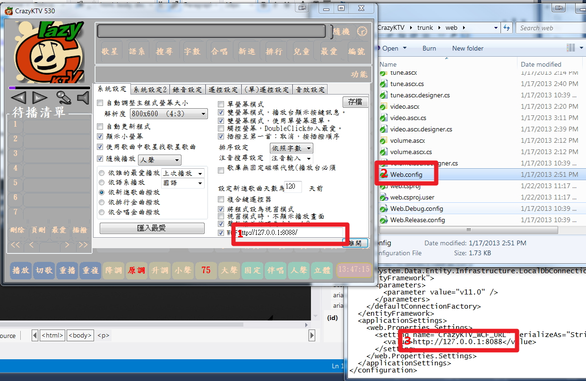

You are here because this web cannot connec to WCF. There are few things you may need to check:
1. Windows Firewall: allow the WCF port to go through
2. The WCF setting doesn't match up, you need to modify \web\web.config file as below in the KTV computer.
